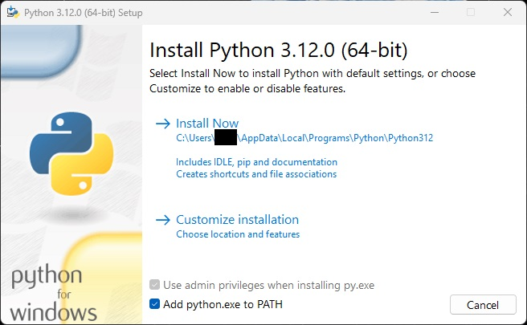
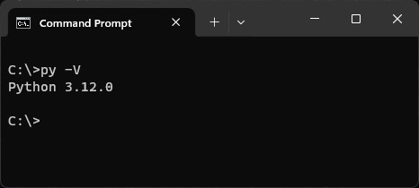
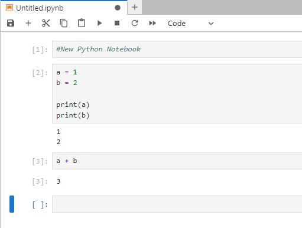

Starting from the Beginning
My grandfather was a life long learner, he didn’t own a computer until later in life and when we got one he dove deep into understanding how it worked. You could say he started from the beginning. He often would call me with or email me with questions that were far beyond my understanding at the time and now looking back I think he was trying to challenge me to learn more as well as seek understanding for himself.
My dad is also a life long learner and recently asked me about learning to write programs. I gave him a book to start learning python. His questions about installation partly inspired this post.
So like my grandfather and my dad, I’m starting blogging from the beginning with installing python. I’ve installed python half a dozen times on different machines so here’s some instructions to get python up and running on your machine.
Installation Steps
There are a few different ways to get started using Python on Windows. The two I’ve used to install Python:
- Installing Anaconda (which includes Python library and many popular packages, as well as some cool data science tools)
- Installing Python using a stand-alone installer from Python.org
In this post, I’ll stick with installing the stand-alone package.
Step 1: Download the package
First, go to https://www.Python.org/downloads/windows/ and download the latest stable version of Python. As of writing that’s version 3.12.0.
Step 2: Install
Run the install package. In the screenshot below notice the include Python in the system path.

This makes it easier to find when setting up your tools later. Starting Python from the command line is also easier. If you change your installation path just note that you should still add it to the system path.
Step 3: Test
Make sure that Python is installed properly. The easiest way is to check the version by typing python -V into the command line of your choice.

Step 4: Install Jupyter Notebooks
Learning a new programming language comes with learning a new ecosystem of tools and libraries. One that is invaluable is Jupyter Notebooks. See below for a brief description of the tool’s main features
Once you’ve verified Python is installed. You can use pip to install Jupyter Lab.
pip install jupyterlab
Notebooks can be used within the browser without any other tool or you can add an extension to Visual Studio Code to run them in VS Code. I alternate between the two but lately have been tending to spend more time in Visual Studio Code.
Step 5: Start Jupyterlab and get coding
Go to the terminal and type in jupyter lab
After it launches open a new notebook and get coding.
Using Notebooks
A notebook is organized as a series of blocks. Each block can either be executable code or just text making it easy to separate executable code from notes about that code in the same file.
The notebook can be executed all at once. The order it executes is top-down. OR you can run each block individually. The result of a code block is displayed directly below the block giving you immediate feedback. You can also reference blocks that have been executed before. This gives you the ability to define variables and depend on results from previous code blocks. Here’s an example:

Not only do Notebooks ease the learning process but they are used in professional projects so it’s beneficial to learn to use and get comfortable with it. As you get more comfortable with the language and the tool you can make it more interactive.